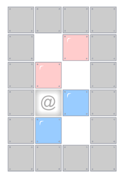

6. Skúška 13.2.2026 - Colorsok puzzle¶
Colorsok puzzle je hra pre jedného hráča, ktorého cieľom je presúvať v štvorcovej sieti všetky farebné kvádre tak, aby kvádre rovnakej farby boli vedľa seba (dotýkali sa jednou stranou). Napríklad (hráč je tu označený znakom '@'):
{kind=link}

Hráč pri prechádzaní hracej plochy (pomocou šípok 'l' vľavo, 'p' vpravo, 'h' hore, 'd' dole) môže kváder, ktorý leží pred ním, potlačiť v danom smere na políčko za kváder, ale len vtedy, keď je toto políčko prázdne (nie je tam ani stena, ani iný kváder, ani okraj plochy). Teda tlačiť pred sebou môže len jeden kváder, za ktorým je voľné políčko.
Cieľom programu je odkontrolovať, kam sa hráč po zadanej postupnosti šípok dostane, ktoré kvádre kam presunie a koľko dvojíc kvádrov rovnakej farby sú tesne vedľa seba.
Textový súbor popisuje hraciu plochu sériou riadkov. Prvé riadky súboru popisujú prázdnu hraciu plochu a za tým nasledujú riadky, ktoré popisujú umiestnenie farebných kvádrov a aj samotného hráča.
Riadky, ktoré popisujú hraciu plochu zodpovedajú riadkom štvorcovej siete (všetky sú rovnako dlhé) pričom obsahujú postupnosť celých čísel:
prvé číslo označuje počet políčok steny (budeme ich vykresľovať znakom
'#'), za tým nasleduje počet voľných políčok (budeme ich vykresľovať znakom'.') a za tým opäť počet políčok steny, atď.keďže všetky riadky sú rovnako dlhé, súčet všetkých čísel v každom riadku je rovnaký (šírka hracej plochy)
počet týchto riadkov zrejme označuje výšku hracej plochy
Ďalej nasledujú riadky popisujúce polohu hráča a tiež polohy všetkých farebných kvádrov. Ak riadok začína znakom:
'@', nasleduje štartová poloha hráča ako dvojica riadok a stĺpec (riadky aj stĺpce číslujeme od0)od
'a'po'z', nasledujú dvojice polôh (riadok a stĺpec) pre kvádrekaždé písmeno reprezentuje jednu farbu a keďže kvádrov každej farby sú presne dva, tak aj v riadku sú práve dve dvojice polôh
Môžeš predpokladať, že súbor je zadaný korektne a že všetky kvádre aj hráč sú na rôznych pozíciách.
Riešenie zapíš do triedy Colorsok s týmito metódami:
class Colorsok:
def __init__(self, meno_suboru):
...
def __repr__(self):
return ''
@property
def kvadre(self):
...
@property
def pri_sebe(self):
...
def posun(self, prikazy):
...
kde
metóda
__init__(meno_suboru)- prečíta textový súbor celej plochy s kvádrami a pozíciou hráčametóda
__repr__()- vráti viacriadkový znakový reťazec, ktorý reprezentuje momentálny stav hracej plochy aj s pozíciou hráča (znak'@') a všetkých kvádrov (zodpovedajúce znaky písmen); steny zobrazuje znakom'#'a voľné políčka znakom'.'metóda
posun(prikazy)- kde parameterprikazyje znakový reťazec s postupnosťou príkazov, teda stláčaných šípok (znaky'l','p','h','d') – hráč sa v ploche pohybuje podľa týchto zadaných príkazovak je daným smerom voľné políčko, presunie sa naň
ak je daným smerom farebný kváder, za ktorým je voľné políčko, tak sa presunie daným smerom, pričom presunie aj kváder na voľné políčko
ak sa daným smerom nemôže pohnúť (je tam okraj plochy, stena alebo prekážka za tlačeným kvádrom), tento konkrétny príkaz sa ignoruje
metóda vráti počet naozaj vykonaných krokov
pomocou property
kvadremôžeš zistiť pozície všetkých farebných kvádrov:výsledkom je slovník (typ
dict): pre každé písmeno v ploche bude obsahovať množinu polôh zodpovedajúcich kvádrovnapríklad
{'a': {(1, 2), (2, 1)}, 'b': {(3, 2), (4, 1)}}označuje, že v ploche sú dva kvádre s menom'a'a ich polohy sú(1, 2)a(2, 1)(teda nie sú tesne vedľa seba)
pomocou property
pri_sebemôžeš zistiť, ktoré farebné kvádre sú tesne pri sebevýsledkom je množina (typ
set) písmen, ktoré reprezentujú takéto farebné kvádre (tesne pri sebe)ak sú všetky dvojice kvádrov tesne vedľa seba, metóda namiesto množiny písmen vráti reťazec
'všetky'
Napríklad, pre súbor 'subor1.txt':
4
1 2 1
1 2 1
1 2 1
1 2 1
4
a 2 1 1 2
b 3 2 4 1
@ 3 1
takýto test:
if __name__ == '__main__':
c = Colorsok('subor1.txt')
print(c)
print(f'{c.kvadre = }')
print(f'{c.pri_sebe = }')
print(f'{c.posun('lhp') = }')
print(c)
print(f'{c.pri_sebe = }')
print(f'{c.posun('d') = }')
print(f'{c.kvadre['b'] = }')
print(f'{c.pri_sebe = }')
vypíše:
####
#.a#
#a.#
#@b#
#b.#
####
c.kvadre = {'a': {(1, 2), (2, 1)}, 'b': {(3, 2), (4, 1)}}
c.pri_sebe = set()
c.posun('lhp') = 2
####
#aa#
#.@#
#.b#
#b.#
####
c.pri_sebe = {'a'}
c.posun('d') = 1
c.kvadre['b'] = {(4, 1), (4, 2)}
c.pri_sebe = 'všetky'
Môžeš si stiahnuť 1sk_6.zip s kostrou programu a testovacími súbormi 'subor1.txt', 'subor2.txt', 'subor3.txt', …, ktoré používa testovač.
Riešenie úlohy odovzdaj na testovací server https://vektor.fmph.uniba.sk/. Tvoj odovzdaný program musí začínať tromi riadkami komentárov:
# 6. skuska: colorsok
# student: Janko Hraško
# datum: 13.2.2026